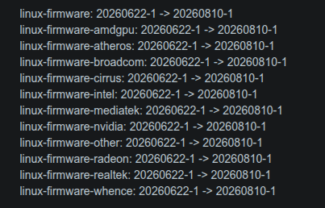

What happened that ultimately pushed me away from Arch Linux
So, I ran checkupdates and saw that some linux firmware updates and some others are out, so of course I
ran sudo pacman -Syu. When i rebooted my aic8800d80 usb wifi kept saying my wifi password was wrong. THat took me 2 days to fix
and the most unexpected thing was the fix. First I tried downgrading, but that didn't work. Than I tried many things,
but they were also in vain. The thing that fixed my wifi was running nmcli connection modify then something after it.
Other things that were also pushing me away from Arch
The Arch updates that broke my wifi

I was running Arch on a pc that I daily drive, and that ain't good. I always had to scroll the archlinux subreddit before a Linux kernal update because I couldn't afford breaking my system. Another thing was that clicking links in many apps wouldn't open them or instead save to my cache, which was really annoying.
Why I specifically chose Fedora Linux
You're probably thinking why I specifically chose Fedora, that is because mainly of its update system. This is in between Debian, which takes years to update to update to newer versions, and Arch, which is almost always unstable and updates almost every day.